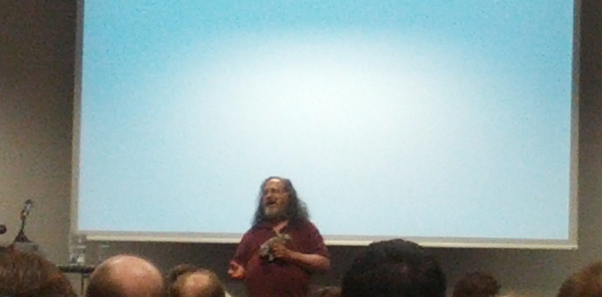
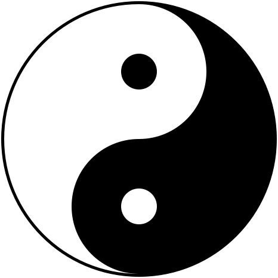

Copyright vs. Community - Stallmann zu Besuch in Wien
Martin, 30.05.2014
Heute lud Quintessenz zu einem Vortrag von Richard Stallman ein. Das Thema war Copyright vs. Community und Stallman gab sich alle Mühe eine Brücke von seinem Vortrag zum Thema Privacy zu schlagen.
Da ich Stallmann zu den prägensten Figuren der letzten 20 Jahre in der IT zähle, wollte ich mir einen Life-Vortrag nicht entgehen lassen. Wenn man sich nur einem mit Free Software und der FSF beschäftigt hatte, bestand der Vortrag hauptsächlich aus bereits gehörtem.
So fiel mir vor allem der gesundheitliche Zustand Stallmanns auf. Oder beständigem Reiben seiner linken Niere, trank er während des zwei stündigen Vortrags zwei Liter Wasser und schien sich immer wieder an dem Rednerpult stützen zu müssen. Nach ca. 30 Minuten pausierte er kurz um eine Tablette zu sich nehmen. Als er die erste Hälfte des Vortrags hinter sich gebracht hatte, begann er merklich zu schnaufen.
Abgesehen von seiner gesundheitlichen Beeinträchtigung gab sich Stallmann kampflustig. Versuchte er zu Beginn sich noch Sympathie mit zwei einstudierten deutschen Vokabeln (kostenlos, frei) zu sichern, schoss er sich bald auf die bekannten Bedrohungen der Freiheit der Benutzer ein:
- Unfreie Software und Hardware (z.B. “Survelance-Devices”)
- Lobby der Industrie für Patente, Copyright, etc.
Generell nichts neues. Deshalb möchte ich mich auf die zwei Punkte konzentrieren die ich so weder gelesen noch gehört habe.
Politische Arbeit ist sinnlos da wir technisch gewinnen.
Stallman betonte mehr als einmal, dass die politische Arbeit wichtiger sei als die Bestrebungen der Hacker Kopierschutzeinrichtungen zu knacken. Er wies auch darauf hin, dass der “Feind” auch kompetente Leute hatte und so z.B. der Kampf um die Blueray-Medien verloren wurde und nach wie vor Bluerays nicht geknackt werden können und so nicht auf freien Betriebssystemen abgespielt werden können. Es ist gefährlich den Feind für inkompetent zu halten.
Copyleft ohne Copyright ist nicht denkbar
Eine völlig logische Konsequenz die ich mir so vorher noch nie überlegt hatte. Jeder sollte wissen, dass es sich bei den bekannten Open Source Lizenzen (GPL, APL, MIT Lizenz, etc.) um so genannte Werknutzungslizenzen handelt. Man räumt also dem Verwender im Rahmen des Urheberrechts bestimmte Rechte und Pflichten ein.
Im Falle der GPL z.B. das Recht auf die Möglichkeit die Quellen des Programms zu ändern verändert sowie unverändert weiter zu verbreiten, aber auch die Pflicht dies unter den selben Bedingungen zu tun wie die unter denen der Zugriff zuvor gewährt wurde.
Daher würde z.B. ein Urheberrecht dessen Lebensdauer auf ein paar Jahre nach der Ersterscheinung des Werkes freier Software schaden, da so nach nur ein paar Jahren die Werke Public Domain würden und so von Firmen verwendet werden könnten während diese sich ihre Software mittels Patente schützen könnten.
Dementsprechend müsste auch hier ein entsprechende Regel gefunden werden die z.B. 10 als Dauer fest legt.
Natürlich blieben auch ein paar Klassiker nicht aus wie z.B. “It's Gnu Slash Linux! Linux is just a Kernel.”